Was kostet KI heute?
Wie sich die Kosten vergleichbarer KI-Leistung entwickeln und welche Kennzahl im praktischen Einsatz zählt.
Video herunterladenDatierte Studienergebnisse und ein ausdrücklich gekennzeichnetes Rechenbeispiel. Epoch AI, 22.09.2026
Quellen und Einordnung